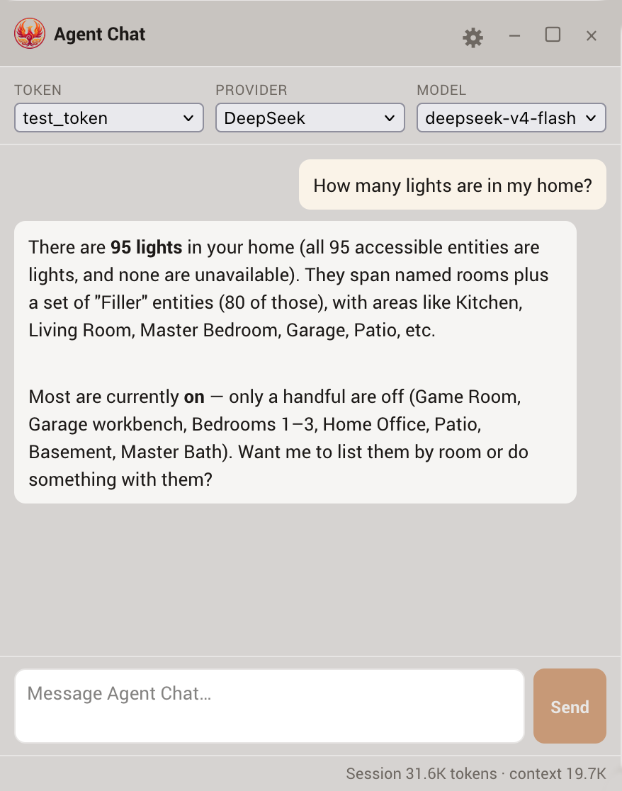
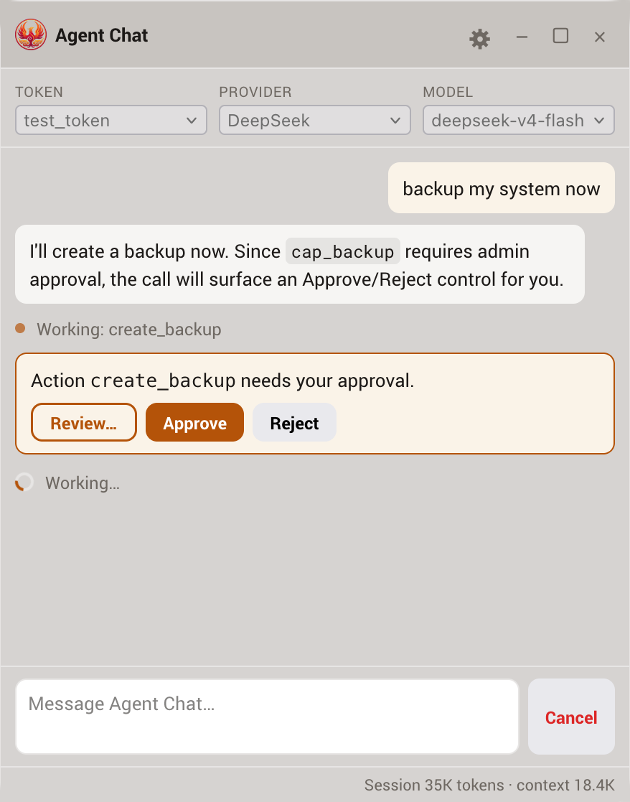

Agent Chat
Agent Chat lets you talk to Home Assistant from a chat window inside Home Assistant itself, without needing to install any external client. Phoenix MCP runs the agent itself, on the token you choose, so everything you already configured, the permission tree, capabilities, approvals, and MESA, applies exactly the same.
Agent Chat vs. External client
Connecting an external client (Claude Code, ChatGPT, and so on) points a tool you already use at Phoenix MCP's MCP endpoint. Agent Chat is the opposite: there's nothing to install and it runs within Home Assistant, but it uses your own LLM account's API key and runs one conversation at a time in the browser. Both drive the same scoped tools and the same safety gates. Use whichever fits your needs.
What it is
When you open Agent Chat, a small chat window floats on top of the panel. You type a request, the agent reasons and calls Phoenix MCP's tools on the token you selected, and its replies, the tools it calls, and their results stream in live. Because Agent Chat runs through the same gated dispatch path an MCP client uses:
- The agent can only ever use the tools that token would expose, and only reach the entities in its permission scope.
- Capability gates still apply. An action set to
confirmstill needs your approval; one set todenyis not offered. - MESA per-entity rules still apply. A read-only or confirm-by-nature entity behaves the same as it would for any client.
- Every tool call is written to the audit log, attributed to that token.
Agent Chat adds no new authority. It is a convenient front end for the exact same scoped surface an external agent would get.
Before you start: add a provider account
Agent Chat does not include an AI model. You bring your own API account with one of 12 providers, and you can add more than one account of any kind (for example two Anthropic keys, or a cloud provider plus a local Ollama):
Claude
Anthropic's Claude models. You provide an API key. Defaults to the most capable model; you can pick another.
DeepSeek
DeepSeek's hosted models. You provide an API key. A thinking control (Off, High, or Max) is available in the gear menu.
ChatGPT
OpenAI's GPT and o-series models via an API key. The reasoning models (o-series and GPT-5) expose a thinking level in the gear menu; standard GPT models expose temperature instead.
Gemini
Google's Gemini models via an API key (using Google's OpenAI-compatible endpoint). Gemini 2.5 and 3 models expose a thinking level (minimal to high).
Grok
xAI's Grok models via an API key (xAI is OpenAI-compatible). The reasoning models expose a thinking level (Off, Low, or High) in the gear menu; with thinking off, temperature applies.
Kimi
Moonshot's Kimi models via an API key, using Kimi's OpenAI-compatible API. The model list is whatever your account is entitled to rather than Kimi's full published catalogue: K3 is plan-gated, and kimi-k2.5 and the moonshot-v1 series are withheld from newly registered accounts, so a new key commonly shows just the K2.6 and K2.7 models. K3 exposes a thinking level (Low, High, or Max) and always reasons; the K2 models expose an on/off thinking toggle instead. Temperature applies only to the legacy moonshot-v1 models.
Meta
Meta's models (dev.meta.ai) via an API key, using Meta's OpenAI-compatible Model API. Muse Spark always reasons, so the thinking level runs from Minimal to X-High with no off state; temperature is left at Meta's default.
MiniMax
MiniMax's models via an API key, using MiniMax's Anthropic-compatible API. Thinking is an on/off toggle in the gear menu (some MiniMax models always reason); temperature is left at the default.
NVIDIA
NVIDIA's hosted models (build.nvidia.com) via an API key, using NVIDIA's OpenAI-compatible API. One key reaches many vendors' models. Tool-calling support varies by model and the catalog does not advertise it, so pick a model documented to support tools. Thinking level is not exposed (it varies by model); temperature applies.
Ollama (cloud)
Ollama's hosted service. You provide an Ollama API key and pick from the cloud models (for example gpt-oss:120b); nothing runs on your own hardware. Same on/off thinking control as local Ollama.
Ollama (local)
A local Ollama server on your own network. No key; you provide its address (for example http://your-host:11434) and pick from the models you have installed.
OpenRouter
A single API key that routes to hundreds of models across providers. OpenRouter is OpenAI-compatible; the model list is filtered to tool-capable models, since Agent Chat needs tool-calling. Thinking level is not exposed (it varies by model); temperature applies.
Local Ollama: the address is relative to Home Assistant, not your browser
Phoenix MCP contacts your Ollama server from the Home Assistant host itself, not from the browser tab you are looking at. http://localhost:11434 means "on the Home Assistant host," which is rarely what you want if Ollama runs elsewhere. Enter an address Home Assistant can reach, check that any firewall between them allows the connection, and if Ollama runs on a different machine, make sure it is configured to listen on more than its own loopback interface.
Changing an account's default model
Each configured account has a Change default model button listing the models that account can currently use. This sets the account's default: the model the chat starts on, and the one used when nothing else is chosen. You can still switch models per conversation from the chat header.
Opening this card also checks each account's current model list, which costs nothing beyond the lookup. If an account's default is a model the provider no longer offers, the card says so and asks you to pick a current one. That model still appears in the list, marked no longer available and greyed out, so you can see what the account is set to without being able to choose it again. Providers do retire model names, and until you change it, chats on that account fail. If a provider cannot be reached, nothing is claimed either way, so an offline provider is never reported as having dropped a model.
Refreshing what a provider offers
Each account carries four square actions: change the default model, refresh the model list, check which options the model accepts, and remove the account. Hover any of them for what it does; the check-options button also shows when it last ran, and remove is marked in red because it cannot be undone. Refresh models re-reads the model list and, where the provider publishes it, what each model supports. Most providers publish nothing beyond a model's name and owner, and the result says so rather than looking like a failed refresh. OpenRouter and Ollama do publish it.
Two providers, OpenRouter and NVIDIA, front many vendors' models behind one key, so Phoenix ships no thinking control for them: no single built-in answer fits, and none is guessed at. Checking a model's options is what settles it there, and for those two the result can add the control rather than only narrow it, since the check establishes the real levels for that one model. Until you run it the model still reasons at its own default; what is missing is the ability to choose.
Otherwise, where capabilities are known they only ever remove a control: a model that declares no reasoning loses the Thinking dropdown, and one that declares no temperature loses that field. A provider that says nothing leaves the controls as they are, so refreshing can never take away a control you were using.
The most useful thing it reports is tool calling. Agent Chat cannot work with a model that cannot call tools, which on a local Ollama is an ordinary thing to have installed. Those models appear in the model list greyed out and marked no tool calling, so you see it where you would otherwise pick one. The refresh costs nothing beyond the lookups, and never sends anything to the model.
A warning appears only when the account itself is broken: its model was retired, or its model cannot call tools. Close it with the × and a small red ! stays next to the model name; click that to read it again. Closing is remembered, and a warning about a different model is a different warning, so acknowledging one never hides a new problem.
Checking which options a model accepts
Most providers publish nothing about their models, so for those, what Phoenix offers in the Thinking and Temperature controls starts as a built-in assumption. Check options replaces the assumption with an answer from the API itself.
It is offered whenever a model is chosen, both when you add an account and when you change its default model, since knowing a model's real options matters before the first conversation rather than after one behaves oddly. Both forms say so and let you skip it; a failed check never fails the account, and you can run it later from the card.
It is the only control on this card that costs anything, so it asks first and says so. It sends a few one-token requests using the account's selected model and reads which options the API accepts or refuses. The amount is small but not zero.
It works by asking a question the API can only answer one way. First it sends a deliberately invalid option: if the API rejects it, that option is genuinely being read, and only then does Phoenix test the real values. A provider that quietly ignores options it does not recognise cannot be asked this way, and the result says so rather than pretending to have learned something. Where Phoenix does not send a thinking level to that provider at all, there is nothing to check and the result says that instead. And if the provider declines every request, because the account has no credit or the key is not valid for that model, the result says that too rather than reporting it as a finding about the model. Nothing is ever narrowed on a guess.
Phoenix also learns from ordinary use. If a provider refuses one of these options during a real conversation, that is recorded and the option stops being offered for that model, so the same failure does not repeat. It only counts a refusal Phoenix can attribute: the provider must reject the request outright and name an option Phoenix actually sent. These findings expire after a month, because a model that refuses something today may accept it after an upgrade, and a permanent assumption is the thing all of this exists to avoid.
Open the chat
Open the window from the Agent Chat button in the Phoenix MCP panel header. It opens on your first token, and a token switcher inside lets you change which token it acts as. The Create Token dialog offers a Set up Agent Chat option that takes you to Settings so you can add a provider account first if you have not already. The guided setup goes further: choosing Agent chat using HA at its "Choose how to connect" step walks you through adding a provider account without leaving the wizard, then opens this window for you with a test prompt already typed in. See the quick start.

The window floats on top of Home Assistant and stays put as you move between tabs. Drag it by its title bar, resize it from any edge or corner (dragging and resizing both snap neatly to the screen edges so nothing runs off-page), minimize it to a small bar you can drag anywhere, or close it.
Panel only, or over all of Home Assistant
By default the chat window is available everywhere: it hovers above the whole Home Assistant interface, on any tab or dashboard, and stays put as you navigate, so you can keep talking to Home Assistant while you look at a dashboard or a config page. If you would rather confine it to the Phoenix MCP panel, turn off Show throughout Home Assistant in the Agent Chat settings card.
A few deliberate limits keep this predictable and safe:
- The window still opens only from the Agent Chat button in the Phoenix MCP panel. There is no button anywhere else in Home Assistant, so if you close the chat window you must return to the Phoenix MCP panel to reopen it.
- Available everywhere requires Home Assistant 2025.5.0 or newer. On an older version, Agent Chat quietly falls back to the panel-only window; nothing breaks.
- While the kill switch is on, the window is hidden and cannot be opened until you turn the kill switch back off.
Using the chat
Type a prompt and press Enter (Shift+Enter for a new line) or click Send. A small spinner shows while the agent is working, which is useful when a local model has to load first and can take a while before the first words appear. While a prompt is running the Send button becomes Cancel: click it to stop, for example if a model is taking too long or you want to reword your prompt. Cancelling keeps everything already streamed in the transcript, marked with a "Cancelled." notice (an unanswered approval prompt in that exchange flips to cancelled), and puts your prompt back in the box so you can edit and resend it. The cancelled exchange stays visible for you, but the model does not remember it on the next prompt.
By default the window stays quiet and shows only the reply, streaming in word by word; the agent's tool calls, tool results, and reasoning are hidden. It does not go silent, though: while the agent works, a single line names what it is doing right now, for example Working: search_entities, replaced as it moves on and gone once the reply arrives. A tool that reports its own progress takes that line over with something more specific, such as Compiling living-room-sensor: 40% during a firmware build. Turn on Show verbose output in the gear menu to watch every step instead (each tool it calls and what came back, plus a collapsible Reasoning block where the model exposes one).
A thin footer under the message box shows the conversation's token usage as it happens, for example Session 48.2K tokens · context 12.1K (the abbreviation follows the panel language's own convention, so Chinese renders 4.8万). Session is everything this conversation has consumed (input plus output across every model call; an agentic turn makes several, and each one re-sends the conversation, which is why it grows quickly). Context is the size of the most recent call's input, which is what the Chat memory setting bounds. The numbers are the provider's own exact counts, never estimates, so reasoning tokens count as output even when the reasoning is hidden; a provider that does not report usage shows "No usage data available from this provider" instead. Turn the footer off with Show token usage in the gear menu. The gear menu also has Show timestamps (off by default), which adds the time to each message bubble in the transcript.
The header has three selectors, each labelled: the Token the agent acts as, the Account (which configured provider account runs it), and the Model. Switching the token or account starts a fresh conversation, because the available tools and message format change. The model can be switched at any time.
Approvals in the chat
When the agent tries to do something that a capability has set to confirm, the action does not just run. A card appears in the chat with Review…, Approve, and Reject buttons. Because you are the administrator viewing the panel, you can decide right there:

- Review… opens the Approvals tab for this request, where you can see the full details of what the action would change before deciding. The chat card stays put, so once you have looked you can come back and Approve or Reject inline.
- Approve and the queued action runs and the same turn continues, with the result fed back to the agent. Approving also tells the agent you reviewed and accepted that exact change as it landed: it must not revise it, move it, or file a corrective follow-up on its own, even if the result differs from what it intended; if it notices a discrepancy, it says so in one sentence and stops, and you decide.
- Reject and the agent is told the action was not applied. The reason you type when rejecting is passed to the agent as direction for its next proposal, so rejecting with a note like "only two lines, average the sensors" is the natural way to iterate on a design; as many rounds as it takes is fine. The chat card itself has no reason box: type the reason in the reason field on the Review… screen, and it is attached whether you then reject there or on the chat card. Rejecting without a reason tells the agent to ask how you want to proceed rather than try again. If the exchange is going nowhere, Cancel stops the turn (the conversation stays on screen).
This is the same approval that would otherwise appear in the Approvals tab; Agent Chat just brings the decision inline so you do not have to leave the conversation, with Review… as the one-click way to jump to the full record when you want it.
Agent Chat cannot skip the gates
Approving in the chat is the same admin approval as anywhere else. The agent cannot grant itself an approval, reach an out-of-scope entity, or use a capability set to deny. The chat is a convenience layer on top of the same enforcement.
Options and clearing history
The gear button in the title bar opens the options popover. It only ever shows the controls the selected provider and model actually support:
- Show verbose output (off by default): when off, the window shows the final reply plus a single live line naming the tool currently running; when on, it also shows each tool call, its result, and the model's reasoning.
- Thinking: a single dropdown offering that model's real reasoning levels. Claude ranges from Off through the effort levels up to Max; DeepSeek offers Off, Low, High, or Max; OpenAI reasoning models (o-series, GPT-5) and Gemini 2.5/3 offer their reasoning levels (minimal to high); Grok offers Off, Low, or High; Kimi K3 offers Low, High, or Max and the K2 models a simple on/off toggle; Meta runs Minimal to X-High with no off (Muse Spark always reasons); MiniMax is a simple on/off toggle; models with no thinking control simply omit this.
- Temperature: shown only where it applies, DeepSeek (when thinking is off), standard GPT models, Grok (when thinking is off), Kimi's legacy
moonshot-v1models, OpenRouter, NVIDIA, and Ollama (local and cloud). It is not shown for Claude, Gemini, Meta, MiniMax, or the Kimi K2/K3 models, whose providers either reject it outright or recommend leaving it at the default for their reasoning models.
The same menu has a Clear chat history action, which empties the conversation and starts fresh without closing the window or changing your token, provider, or model, and a Close button to close the popover.
You can do the same thing from the message box: type /clear and press Enter to start a new conversation. The command is handled locally, it is never sent to the model and does not appear in the transcript, and it does exactly what Clear chat history does.
Chat memory
Conversations live only in your browser. They are never saved on the server. The conversation and anything you have typed but not sent are kept in the browser's local storage for the machine and browser profile you are using, so they survive navigating away from the panel and reloading the page. That storage holds the transcript, including tool results, so treat it like any other admin data on that machine. Clear chat history (or /clear) removes it, and the stored copy is capped: a very long conversation drops its oldest exchanges rather than growing without limit.
The Chat memory (lines) setting (in the Agent Chat Settings card) bounds how many lines the window keeps, which is also the conversation's memory. Setting it to 0 means the agent will have no memory of previous prompts; 100 to 500 lines is a good range, and the maximum is 5000.
Phoenix MCP resends the retained transcript with each turn, because the model has no memory of its own between turns; that transcript is how it knows what was said earlier in the conversation. (On Claude, the repeated portion is served from the provider's prompt cache at a reduced rate, so the added cost is smaller than the raw token count suggests.)
- Default is 100 lines; the maximum is 5000.
- Set it to 0 to keep nothing, but beware: each prompt starts with no memory of earlier prompts.
Raising the limit lets the agent remember more of a long session, at the cost of sending more text (and so more tokens) to your provider each turn.
Steps before check-in
A single request can take many tool steps, especially an investigation ("why did this light turn on 5 hours ago?") that reads history, the logbook, traces, and event context before it can answer. To keep a runaway from looping forever, Agent Chat runs a set number of tool steps per turn and then pauses to ask Continue investigating? with a Continue / Stop control. Continue picks up exactly where it left off and runs another batch; you can continue as many times as you like. Stop leaves the conversation as it is. Nothing is lost either way, so a deep task is never cut short with no answer.
The Steps before check-in setting (in the Agent Chat Settings card) sets how many steps run before that pause. The default is 20; the range is 3 to 100. Raise it to be asked less often on deep tasks, lower it to stay more in the loop. The same limit applies to the voice agent and AI Task, which have no one to ask and simply stop when they reach it.
Privacy and security
- Your API key is never exposed to the browser. It leaves the Home Assistant host only to authenticate Phoenix MCP's own requests to the provider you chose. It is stored in
.storage/phoenix_mcp_agentcli_secrets(in your Home Assistant config directory), a file separate from your tokens (.storage/phoenix_mcp) and the rest of Phoenix MCP's settings, and is never sent to the browser, logged, or written into a transcript. It is included in Home Assistant full backups and in partial backups of.storage. You can delete it at any time by removing the account in Settings, or by ticking "Delete Agent Chat provider keys" in the Settings › Data Management wipe. - Agent Chat honors the kill switch. The chat runs the same scoped tools an external agent would; if you engage the kill switch, Agent Chat stops along with the rest of Phoenix MCP's agent surface. The provider settings remain reachable so you can manage them.
- Admin only. Opening the chat and configuring providers both require a Home Assistant admin session, the same as the rest of the panel.
- Your conversation goes to your provider. Requests and the tool results the agent sees are sent to the LLM provider you chose (Anthropic, DeepSeek, OpenAI, Google, xAI, Moonshot, Meta, MiniMax, OpenRouter, NVIDIA, Ollama Cloud, or your local Ollama). For a fully local setup, use a local Ollama server.
- Model output is treated as untrusted. The assistant's replies are rendered as Markdown with all HTML and scripts escaped to plain text and non-text control characters stripped, so nothing a model emits can execute in your browser. If a reply did contain such content, the window shows a short notice so you know it was neutralized.